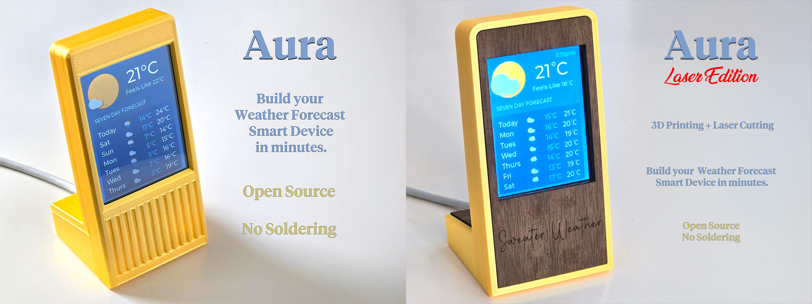

Aura is a smart weather forecast display for your home. It's open
source, costs less than $20 to build, and assembles in seconds
without any wiring or soldering.
You can find the full project instructions here. This page is
only for installing the software on the ESP32 board.
Software Installation Instructions
-
Connect your ESP32-2432S028R ILI9341 board (with 2.8in screen) to
your computer's USB port.
-
Click the 'Connect' button below. This will only work in Google Chrome or
Microsoft Edge.
-
When prompted to choose a port, choose “USB Serial”.
-
Click 'Install Aura'.
Software Updates
To upgrade to the latest version, just re-install the software above.
-
v1.1 - Added the current time to the screen.
-
v1.0 - Initial release.